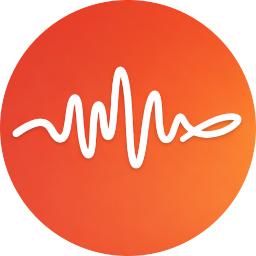
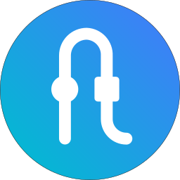
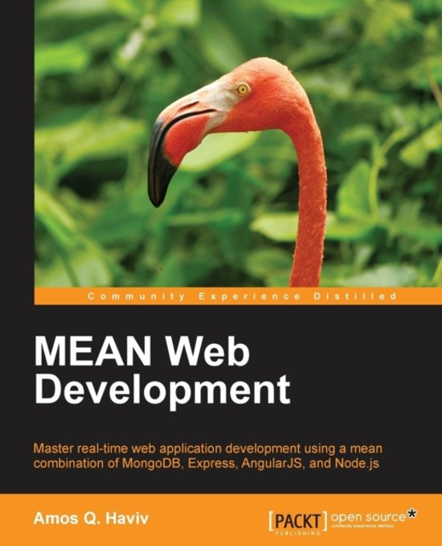
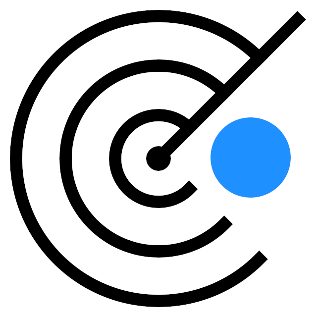
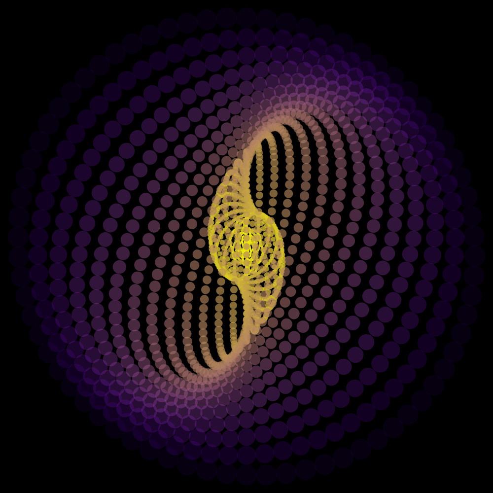

Hi, I'm Amos.
I lead developer workflow at Booking.com, where I spend my days thinking about how AI is reshaping the way software gets built — and how to make that future shippable.
What I do.
I lead the developer workflow group at Booking.com, where my team is responsible for the tools, platforms, and practices that thousands of engineers use to ship code every day — from local development through code review, CI, and the increasingly agentic edges of all three.
Most of my focus right now sits at the intersection of AI and the software development lifecycle. I think about what it means to validate AI-generated code at scale, how to keep humans meaningfully in the loop when agents are doing more of the typing, and what a real engineering platform looks like when generation is cheap and trust is the bottleneck. I write about this in The Agentic SDLC series.
Before this, I authored two books on the MEAN stack, created the open-source MEAN.JS framework, and built a handful of side projects at the seam of math, art, and data. I'm a software engineer by heart, a technical leader by profession, and persistently curious about the place where technology, science, and people meet.
Recent essays.
Things I've built.




